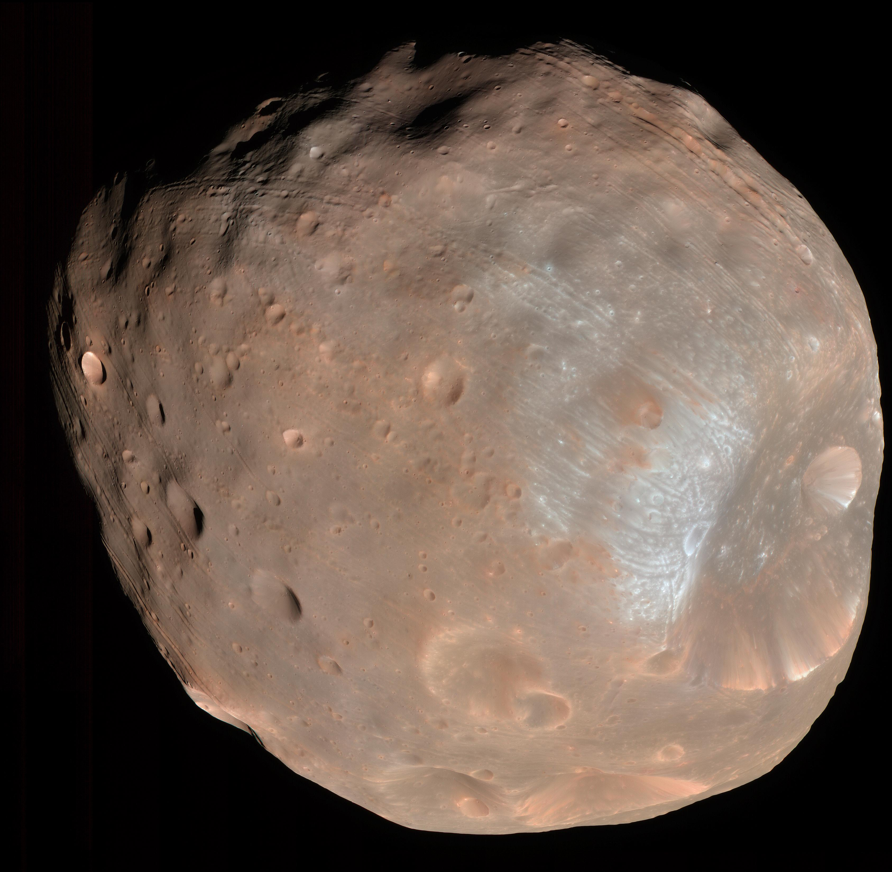
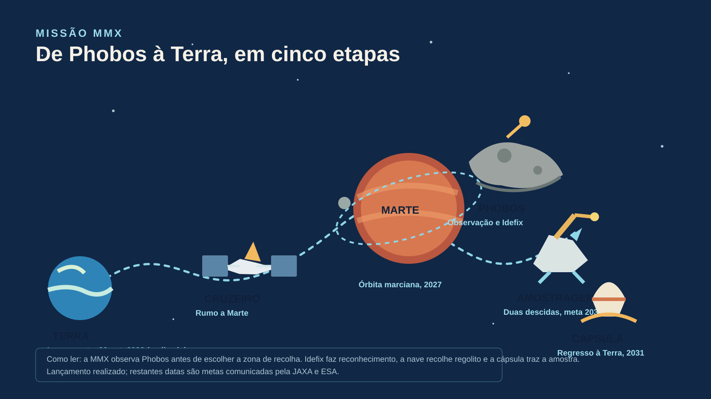

Phobos: a pequena lua que pode guardar a história de Marte
Lançada em outubro, a missão MMX vai tentar trazer para a Terra pelo menos dez gramas de material de Phobos. A amostra poderá ajudar a distinguir duas histórias muito diferentes para a origem da lua marciana.
Phobos parece pouco mais do que uma pedra escura, irregular e demasiado próxima de Marte. É precisamente essa aparência modesta que a torna interessante. Não sabemos se nasceu como um asteróide capturado pela gravidade marciana ou se é o que sobrou de um impacto colossal em Marte. As duas hipóteses prevêem materiais, idades e misturas diferentes. Uma fotografia orbital ajuda a descrever a superfície, mas uma amostra permite medir átomos, minerais e compostos orgânicos com instrumentos que não cabem numa sonda.
A Martian Moons eXploration, MMX, é uma missão japonesa com participação europeia e norte-americana que fará essa passagem da imagem para a matéria. Foi lançada com sucesso a 20 de outubro de 2026. A JAXA planeia cerca de cinco anos de missão, com observação de Phobos e Deimos, duas descidas a Phobos e o regresso de pelo menos dez gramas à Terra. O calendário comunicado pela ESA aponta para entrada em órbita de Marte em 2027, operações de superfície em 2030 e chegada da cápsula à Terra em 2031. Estas datas são metas de missão, não garantias: navegação, aterragem e o próprio regresso continuam a ser fases de risco.
Duas origens, duas assinaturas
A hipótese da captura diz que Phobos era um pequeno corpo do Sistema Solar exterior ou da cintura de asteróides que ficou preso pela gravidade de Marte. A hipótese do impacto diz o contrário: matéria de Marte, possivelmente misturada com o impactor, foi lançada para órbita e agregou-se numa lua. A órbita quase circular e muito próxima do equador de Marte costuma favorecer uma origem em disco de detritos, mas a reflectância escura e a semelhança espectral com corpos carbonáceos mantêm a captura em jogo. Nenhum destes indícios, isoladamente, fecha o caso. Isótopos de oxigénio, minerais hidratados, grãos ricos em carbono e a proporção de material marciano numa amostra podem pesar muito mais do que uma cor observada à distância.

Como pousar onde quase não há peso
Phobos tem gravidade tão fraca que a questão não é apenas pousar sem partir, mas não voltar a sair da superfície. A ESA calcula que o rover europeu Idefix, com 25 quilogramas na Terra, terá ali um peso equivalente a cerca de 15 gramas. A MMX começa por observar a lua numa órbita quase-satélite, uma trajectória que acompanha Phobos em torno de Marte e permite estudar muitos locais antes de escolher. O rover deve medir textura e composição do regolito, ajudando a preparar a descida principal. Só depois a nave mãe tenta tocar a superfície, recolher grãos e rocha, e acondicioná-los na cápsula de retorno. A recolha não é um detalhe logístico: uma amostra contaminada, perdida ou demasiado alterada perde parte do valor científico.

Um arquivo misturado por Marte
Mesmo que Phobos não seja um pedaço de Marte, a sua superfície pode conter uma pequena biblioteca marciana. Impactos em Marte ejectam material para o espaço; parte dele pode ter caído sobre as luas ao longo de milhares de milhões de anos. A JAXA descreve a missão como uma forma de estudar a evolução da esfera marciana e a origem de água e matéria orgânica nos planetas terrestres. Essa promessa exige prudência: encontrar uma assinatura marciana não equivale a encontrar vida, nem uma amostra de superfície representa automaticamente o interior de Phobos. Mas, em laboratórios terrestres, será possível separar grãos, datar eventos, procurar compostos voláteis e comparar a química com meteoritos e rochas marcianas. É uma medição com resolução incomparavelmente superior à de um espectrómetro em órbita.
A colaboração também é um instrumento
A MMX é liderada pela JAXA e reúne NASA, CNES, DLR e ESA. A Europa fornece o rover Idefix, que funcionará como reconhecimento no terreno antes da amostragem principal. A arquitectura da missão é deliberadamente exigente: viajar até Marte, operar repetidamente junto de uma lua irregular, descer com segurança e enviar uma cápsula de volta à Terra. A experiência do Japão com Hayabusa2 ajuda, mas Phobos não é o asteróide Ryugu: está num ambiente dominado pela gravidade de Marte e tem uma história geológica própria. Se a cadeia funcionar, o resultado será mais do que uma resposta sobre uma lua. Será uma demonstração concreta de que material do sistema marciano pode ser trazido para análise aberta, repetível e independente.